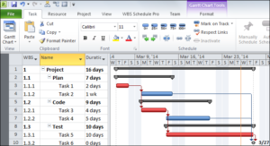

7 советов начинающему проектировщику
Опубликовано 14.08.2016
Многие начинающие проектировщики думают, что для успеха им нужно только научиться делать схемы и выполнять расчеты. И тогда они сразу начнут расти «в деньгах» и должности.
Это не совсем так. По крайней мере если вы не обладаете какими-то уникальными знаниями.
Любую коммерческую организацию в конечном итоге интересуют не ваши знания и навыки, а умение создавать коммерческий продукт. А вот это понятие включает в себя гораздо больше, чем просто «умею делать чертежи». Сюда входят и «делать все в установленный срок», и «не клепать мозги своему начальнику», и «делать красивую упаковку», и «работать в команде», и многое другое.
Если не хотите стать «нищим суровым технарем, чью тонкую натуру не могут понять окружающие тупые манагеры», то вот вам 7 самых полезных навыков современного проектировщика.
Проектирование очень хорошо поддается планированию. По сути здесь мало творчества и поэтому определить объемы работы и сроки на их выполнение довольно просто. Делай это каждый раз, для своего участка работ, даже если никто не просит. Этот полезный навык, который пригодится в будущем.
План должен быть обязательно записан на бумаге/в программе. В нем должны представлены не только разделы проекта (схемы, расчеты, ПЗ), но и действия по сбору исходных данных, проверке, стыковке со смежниками и т.д. В плане обязательно должны быть проставлены даты завершения каждого пункта.
Лучше всего план выполнять в MS Project, где есть возможность строить связанную диаграмму Гантта.
ВАЖНО: 95% проектировщиков не умеют делать правильный план работ и многие из них никогда даже не пытались это делать. Потому, что это сложно, от них этого не требует руководитель, так проще отмазываться, если где-то срываешь сроки.
Однако, стоит помнить, что планирование и контроль за выполнением – это функции руководителя. Если хочешь стать в будущем начальником, то начинай изучать его функции сейчас. Также планирование – это самый быстрый способ увидеть систему проектирования и все разделы проекта в целом.
Будь в оставшихся 5% и это может серьезно повлиять на твою карьеру.
Ты должен сделать все свои задачи и не залезать в чужие. По началу не всегда понятно, где заканчиваются твои схемы/расчеты и начинаются смежные. Перед началом работы нужно обговорить и зафиксировать свои границы, чтобы не было недоразумений со смежниками и с начальником отдела.
Тем, кто хочет заниматься фрилансом – Границы подряда должны быть письменно согласованы с заказчиком! Иначе вы можете не увидеть свои деньги. Обычно это делают при помощи таблицы в которой прописаны все работы по проекту и крестиками указано, за что отвечаете вы, а за что заказчик. Если вы по-разному видите эту ответственность – это сразу всплывет при согласовании такой таблицы.
Иногда фрилансерам не платят деньги не просто потому, что заказчик – “казьёль”, а потому, что он считает, что работа выполнена не до конца. Здесь, естественно, перед проектированием никто не согласовал границы подряда.
Проектирование обычно — это командная работа. Особенно если проект большой. В этом случае обязательно нужно согласовать, как оформлять чертежи. Это касается и условно-графических обозначений (УГО) элементов, и порядка следования чертежей, и их нумерации, и номеров транзитных цепей в схемах, и много еще чего.
Проект должен быть выполнен в едином стиле. Если 3 проектировщика в конце выдают правильные, но по-разному оформленные чертежи, то им все придется перерабатывать. Это одна из самых распространенных ошибок при проектировании и, пожалуй, самая глупая.
За единый стиль проекта отвечает ГИП или начальник отдела, но всем участникам также стоит об этом побеспокоиться. Не приступайте к отрисовке схем, если не получили шаблоны и инструкции по оформлению.
Запросить исходники у Заказчика (схему подключения к сети, уровни токов КЗ, информацию по существующему по ПС оборудованию и т.д.) не так просто, как кажется на первый взгляд. Особенно это касается реконструкции действующих объектов, где полно старого оборудования и кабелей, и где только местные энергетики могут ответить на ваши вопросы. А могут и не ответить, если вы будете неправильно их спрашивать.
Сравните два вопроса:
— Просим предоставить данные по кабелям 6 кВ и уставкам вышестоящих защит на РП-1.
— Просим предоставить данные по кабелям 6 кВ (тип, длина, способ прокладки, максимальную токовую нагрузку) и уставкам защит фидеров 5 и 7 в РП-1 (тип защиты, уставку МТЗ по току, уставку МТЗ по времени).
На первый вопрос я, как эксплуатация, могу взять все, что у меня есть по этим кабелям и направить проектировщику. И формально буду прав, даже если там не все данные. Просили данные – я их отправил. Какой вопрос – такой и ответ.
На второй я уже должен посмотреть, что отправляю потому, что есть конкретика. И проектировщик потом может предъявить, что ему направили не все, что он просил.
А чтобы придать вес этому запросу, его нужно направлять официально – от директора на директора. Тогда исполнитель со стороны заказчика будет искать исходники и вы сможете выполнить нормальный проект.
Запрос исходных данных лучше всего выполнить в виде таблицы, которую должен заполнить заказчик. Это наглядно и если какие-то графы будут не заполнены, то это сразу будет видно.
Если вы не можете правильно запросить данные, то вряд ли начальник будет о вас высокого мнения.
Создай папки Входящие и Исходящие и выкладывай туда все сканы официальный писем и ключевые электронные письма. Вообще перед началом проектирования нужно создать структуру папок, в которую прописать Исходные данные, Переписка, Оборудования, Проект и т.д. Но самое главное – это переписка с Заказчиком.
Все важные письма должны быть под рукой и мгновенно предоставляться начальнику при запросе. Обычно в конце проекта между заказчиком и проектировщиком есть разногласия и начинаются выяснения – “кто прав, а кто нет”. Все чем может прикрываться проектировщик – это ТЗ на проектирование, нормы и письма от самого Заказчика.
Если писем нет или они “потерялись” внутри твоего электронного ящика, то угадай, кто будет главным “нехорошим человеком”?
Сейчас в почтовиках можно настроить папки Входящие и Исходящие по конкретному проекту и закидывать туда электронные письма от заказчика и его подрядчиков. Это позволяет быстро вести дела потому, что таких писем могут быть сотни. Но сканы официальных писем все равно необходимо сохранять!
При ответе на замечания нужно обязательно ссылаться на страницу/лист проекта, на нормы, на ТЗ или письма самого заказчика. Все остальное вряд ли сработает.
В таблице с ответами на замечания должен быть отражен Результат – Принимается/Не принимается. Если замечание принимается, то лучше всего указать, когда оно будет исправлено.
Умение решать вопросы с Заказчиком — очень полезное свойство проектировщика. Оно высоко ценится руководством.
Если хочешь упростить себе жизнь и ускорить согласование проекта, то прежде всего ты должен правильно общаться с Заказчиком и его смежниками.
Есть два уровня взаимодействия с Заказчиком по вопросам проектирования – официальный и личный. Они не исключают, а наоборот дополняют друг друга.
Официальный уровень – это официальная переписка.
Здесь ты запрашиваешь исходные данные, направляешь свои вопросы, отвечаешь на замечания и просите согласовать технические решения к такому-то числу и т.д.
Некоторые компании, особенно большие уважаемые проектные институты, решают все вопросы исключительно с помощью официального уровня. Получается этакая гаубичная дуэль, когда проектировщик, прикрываясь подписью своего директора, ведет огонь навесными по окопам Заказчика, не видя и не слыша его лично. Специалист Заказчика огрызается в ответ, считая, что с той стороны враг и отступить хоть на шаг от своих замечаний, значит позорно проиграть. Делает он это также через своего начальника или директора, чтобы усилить эффект.
Я был свидетелем многомесячных (!) официальных переписок, без личного контакта между техническими специалистами и без… нужного результата! А требуемым результат – это согласованный проект, причем нужен этот результат обеим сторонам.
Решение этой проблемы – перейти на личный уровень общения и максимально его развивать.
Личный уровень – это способы наладить неформальные отношения с лицом, принимающим решение (ЛПР) по вашему проекту.
При этом не обязательно знакомиться с боссами Заказчика и заручаться их поддержкой. Это скорее даже навредит делу потому, что никто не любит, когда его собеседник использует административный ресурс.
Для наведения “мостов” с ЛПР (обычно это технический специалист среднего звена) нужно сделать следующие шаги:
— Узнать кто именно будет проверять и выдавать замечания по твоему разделу
— Познакомиться с этим человеком. Лучше всего лично, если лично не получается, то хотя бы по телефону. Не нужно скрываться до последнего момента и выпрыгивать как черт из табакерки с готовым проектом, надеясь на элемент неожиданности. Неожиданностью скорее всего станет для вас перечень замечаний, полученный от ЛПР.
Удобнее всего познакомиться с техническими спецами при предпроектном обследовании.
— Узнать есть ли у него какие-либо особые пожелания по проекту? Это полезно не только для установления личного контакта, но и для самого проектирования потому, что ЛПР обычно знает подробности и тонкости по своему объекту. Особенно если дело касается реконструкции существующего объекта.
Даже если особых требований у ЛПР нет, ему будет приятно, что его мнение учитывается.
— Сразу после разработки общих технический решений (обычно, для РЗА, это Схема размещения защиты по ТТ и ТН) направить эти данные на рассмотрение и согласование. Направлять можно официальной перепиской, но предварительно позвонить человеку и предупредить его об этом.
Вообще нужно взять за правило согласовывать все базовые решения с ЛПР. Это сильно сократит время на выполнения проекта потому, что потом придётся меньше исправлять.
— Эффективнее всего лично обсудить замечания по проекту с ЛПР. Переписка – это долгий и неудобный путь.
Помни, твоя задача – согласовать проект, а не показать какой ты умный.
Вот, пожалуй, и все. Если ты хороший технический специалист и при этом следуешь этим 7 правилам, то, в нормальной компании, карьерный рост будет делом времени.